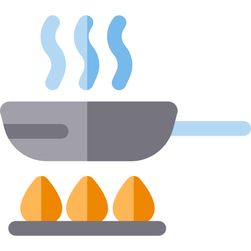

.jpg)
Coxinha
PANELA
 PAIXÃO
ÓLEO
PAIXÃO
ÓLEO
PAIXÃO
ÓLEO
Para a Massa
- 2 xícaras de caldo de galinha (pode ser feito com água e cubos de caldo de galinha)
- 2 colheres de sopa de manteiga
- 2 xícaras de farinha de trigo
- Sal a gosto
Para o Recheio
- 2 xícaras de frango cozido e desfiado
- 1 cebola pequen picada
- 2 dentes de alho picados
- 1 tomate picado
- 1 colher de sopa de azeite de oliva
- Salsinha picado a gosto
- Sal e pimenta a gosto
Para empanar e fritar
- Farinha de trigo
- Ovos batidos
- Farinha de rosca
- Óleo para fritar
Preparo do recheio
- 1. Em uma frigideira, aqueça o azeite de oliva e refogue a cebola e o alho até ficarem macios e levemente dourados.
- 2. Adicione o tomate picado e cozinhe até que comece a desmanchar.
- 3. Acrescente o frango desfiado, a salsinha picada, o sal e a pimenta a gosto. Misture bem e cozinhe por alguns minutos. Reserve.
Preparo da massa
- 1. Em uma panela, leve o caldo de galinha e a manteiga para ferver.
- 2. Assim que ferver, adicione a farinha de trigo de uma vez e mexa vigorosamente até formar uma massa homogênea que se desprenda da panela.
- 3. Transfira a massa para uma superfície enfarinhada e deixe esfriar um pouco.
Montagem das coxinhas
- 1. Pegue porções da massa e abra na palma da mão.
- 2. Coloque um pouco do recheio de frango no centro e modele a massa em formato de coxinha, fechando bem para que o recheio não vaze.
Empanar e fritar
- 1. Passe cada coxinha pela farinha de trigo, pelos ovos batidos e, por último, pela farinha de rosca, garantindo que fiquem bem empanadas.
- 2. Aqueça o óleo em uma panela funda ou fritadeira.
- 3. Frite as coxinhas em óleo quente até que fiquem douradas e crocantes.
- 4. Retire do óleo com uma escumadeira e coloque sobre papel toalha para absorver o excesso de óleo.